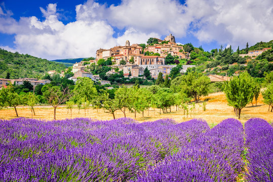

Découverte en Provence
Un séjour pensé pour les seniors recherchant détente, confort et découverte culturelle. Visite de village provençal, marché traditionnel et petite croisière selon la saison.
Durée : 5 jours / 4 nuits | Prix estimatif : 890 € – 1 150 €
DÉCOUVRIR !